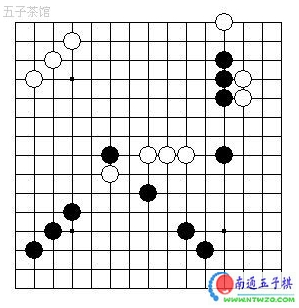
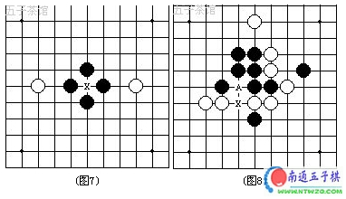

雪飞讲禁手之第二讲：假活三与假禁手
#1 雪飞讲禁手之第二讲：假活三与假禁手作者：有志青年 发表时间：2007-1-5 12:19:06
1、假活三
如图所示的形状都是假活三，因为他们都形不成活四。也正因为有假活三的存在，所以就有假禁手的存在。

2、假禁手
如图7，因为横线是假活三，落子X点后没有一定成连五的可能，因此X点不属于禁手点。如图8，X这一点有可能被看作是三三，但是，由于竖跳三的下一手在A点将成四四禁手而不能走，这种竖三属于死三，所以X点不算三三。

#2 Re:雪飞讲禁手之第二讲：假活三与假禁手作者：咖啡恋上茶 发表时间：2009-1-6 8:59:42
这个很容易看懂，好！#3 Re:雪飞讲禁手之第二讲：假活三与假禁手作者：来客沙丝 发表时间：2009-3-16 19:03:56
理解起来困难些了。
#4 Re:雪飞讲禁手之第二讲：假活三与假禁手作者：花瀑葬 发表时间：2010-6-2 13:53:09
茶弟徒弟来顶师傅了
#5 Re:雪飞讲禁手之第二讲：假活三与假禁手作者：可怜可怜 发表时间：2011-5-8 6:48:41
#6 Re:雪飞讲禁手之第二讲：假活三与假禁手作者：与郎共五 发表时间：2011-5-8 10:56:28
类似不能活三的三型称为死三,是不正确的.